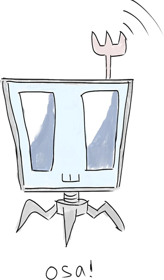

Which forks actually did something?
Enter a repository above and press Fetch forks. You get up to 50 of its most-starred forks that have commits ahead of upstream; forks that were never changed after being created are skipped.
You can also paste any fork's URL into the second box. Then press Analyse: each fork's diff, commits and pull requests are read from GitHub, described by an LLM, and labelled with what it changed (feature, bugfix, system_port…) and why it exists (contributing, vendor, divergent…).
Everything runs in your browser. Your keys and results are stored only in this browser's localStorage and are sent only to api.github.com and api.openai.com.
| Fork | Status | What it changed | Why it exists | Summary | Actions |
|---|